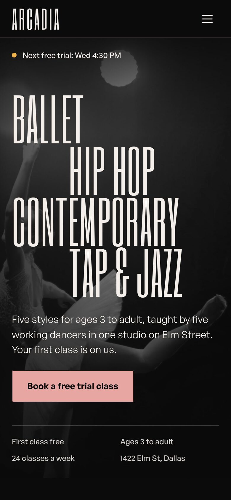

01Empfehlung
Arcadia Dance Collective
Tanzschule · Framer-Vorlage „Relevé“
- Schon ein Plakat: Six Caps, eine extrem schmale Schrift, setzt fünf Stilnamen so groß, dass die Schrift das Bild ist. Darunter ruhig General Sans.
- Alles da: Einstieg mit Infozeile, Stile mit Alter, Lehrer und Preis, Wochenplan Mo–Sa (auf dem Handy als Tagesreiter), 01·02·03 riesig, Aufführungs-Plakat auf Rosa, fünf Lehrer, Zitat mit „4,9 aus 260 Bewertungen“, Preise, FAQ, Schlussband, Name riesig im Fuß.
- Fotos schwarzweiß und klein. Farbe kommt aus fünf Stilfarben (Rosa, Bernstein, Flieder, Mint, Koralle).
- Fast ganz schwarz, eher Bühne als gute Laune. Keine Formen, kein Sticker.
Ganzes9
Abdeckung10
Handy9
Schwache Fotos9
Branchen-Mix8
Summe45

Erste 5 SekundenVier Stilnamen gestaffelt über einer Tänzerin in Schwarzweiß, ein Satz, rosa Knopf, Infozeile mit vier Fakten. Man liest das Angebot, bevor man das Foto sieht. Bei uns: „Fade. Bart. Rasur.“
Vorschau gekürzt · volle Aufnahme in anker/